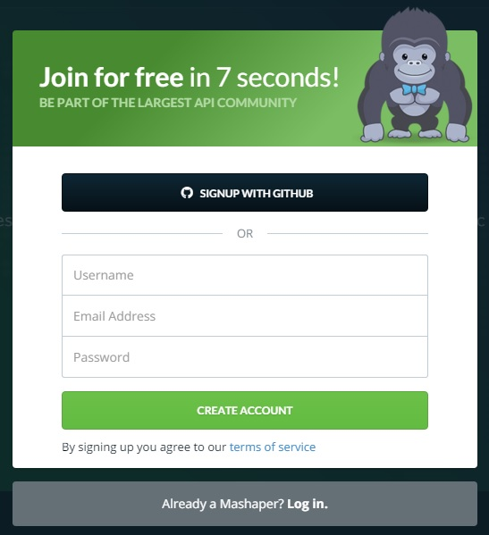
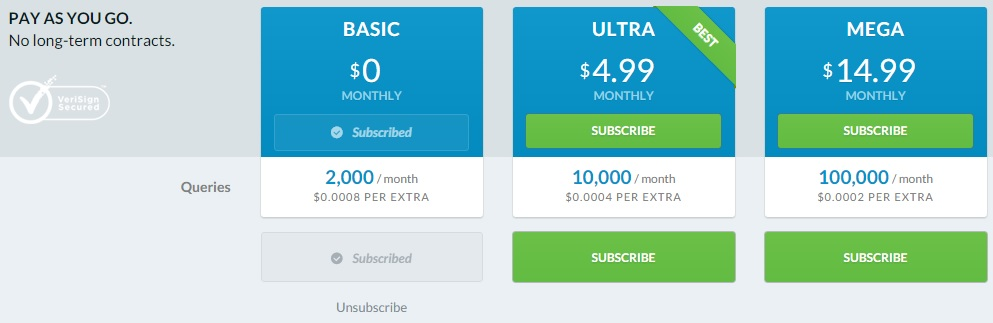
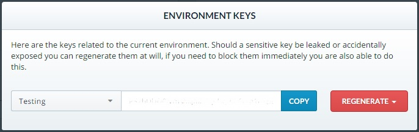

In order to use this particular API, you first need to register through World Time Engine's hosting partner, MashApe, Inc. Because Mashape is a third-party host, this process is a bit involved. There are 3 basic steps to setting up access:
First, navigate to Mashape's login page. In the top right corner, either login with an existing account or sign up for a new account. You should see something very similar to the following pop up:

Once your account is set up and you're logged in, you'll need to subscribe for one of the three options. In order to locate these options, you can search for "World Time Engine Developer" through the search bar and click on the Pricing tab. You should see the following page:

Of course, the more costly the subscription the more queries you're permitted per month. Although the Basic subscription is free for 2,000 queries per month, you will still be asked to enter billing information.
Finally, click on the Applications tab at the top of the page. You should have a "Default Application" already in your list. Click the link to navigate to our final set up page. Depending on how many you're currently using through Mashape, you will see icons for each of your APIs which track your usage. In the right corner just below your avatar, you will see a "GET THE KEYS" button. Once you click it, you should see the following:

You can either choose to create a key for testing or production purposes. Be aware that Mashape does not track data for testing key types, so I would recommend starting with this key type while you're still perfecting your application.
Because billing is involved with this particular API, I would highly recommend keeping your API key private. You can manage this in a couple of different ways. One way is to save your key as a variable and substitute the actual key value for the variable name. This is the method I will be using throughout this guide, so wherever you see APIkey, simply substitute your own key. Another, more secure method is to save your key in a separate static file and simply include the file name where you would otherwise include the key itself.
Now that we're all set up, let's start making requests!